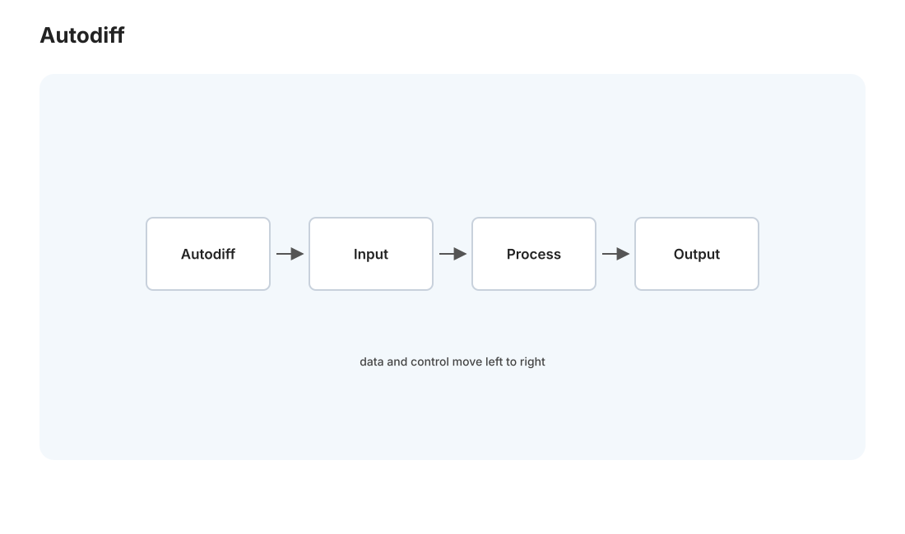
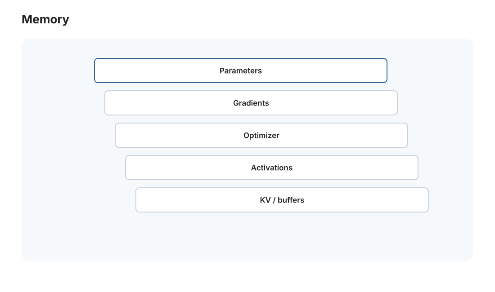
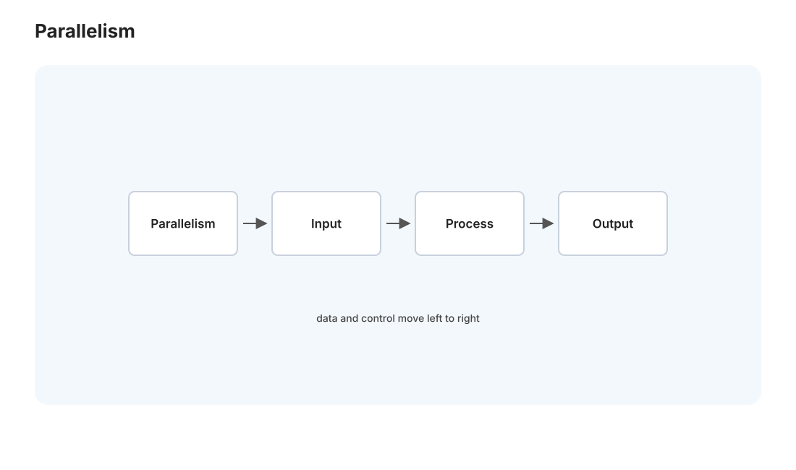

本页目录
MLSys I · 训练系统与并行策略
对标：CMU 15-849 / Stanford CS229S / MLSys 会议论文 ｜ 前置：gpu 线、par-01（并行模型、Amdahl/Gustafson）、ai-course（反向传播） 机器学习的算法你在 ai-course 学过，MLSys 讲的是让它在真实硬件上跑得起、跑得快——大模型训练是当今 HPC 最烧钱的战场。这一页讲训练系统的核心：计算图与自动微分怎么落地、显存为什么总不够（以及怎么省）、以及当一张卡装不下时的多卡并行策略（数据/张量/流水线并行）。这是理解"为什么训练 GPT 要几千张卡几个月"的系统视角。
学习层：7B 模型为什么不是“参数 × 2 bytes”这么简单？
具体谜题：16 GB 卡能不能训练 7B？
7B 参数用 fp16 存一份需要约 14 GB。训练还需要梯度、fp32 master weight、Adam 的动量与方差，以及反向所需激活。若经验账本是 16 bytes/parameter，单卡需要多少 GB？若模型装得下但 batch 想扩大，应该优先用数据并行、张量并行还是 checkpointing？
先写资源预测
预测：① 7B×16 bytes≈112 GB，还未计激活，因此 16 GB 卡不够；② checkpointing 用额外前向换激活显存，不会减少参数、梯度或 optimizer state；③ 完整模型能放下且数据独立时，数据并行的通信主要是每步 all-reduce，单层放不下才需要张量并行。
最小心智模型：计算图、内存账本、通信拓扑
训练系统每步做三件事：前向产生 loss 与需要保存的中间值，反向沿图累积梯度，优化器更新状态。扩展时再把样本、层内矩阵或层段切开；每种切法都把省下的显存换成某种通信或流水线气泡。
形式机制与不变量
对参数量 \(P\)，混合精度 Adam 的静态状态可近似为 \(M=16P\) bytes；若数据并行度为 \(D\)，纯分片前每卡静态状态约 \(M\)，ZeRO 风格分片后约 \(M/D\)（通信与临时 buffer 另计）。反向模式自动微分遵守链式累积 \(\bar v=\sum_{u\to v}\bar u\,\partial u/\partial v\)。梯度同步的不变量是各副本在更新前得到同一平均梯度；checkpointing 的不变量是重算出的激活与原前向一致。
\n+反例与失效边界
- 16 bytes/parameter 是规划用估算，不含激活峰值、碎片、通信 buffer、临时 workspace 和具体 optimizer 实现。
- 数据并行不能解决单层或单个 optimizer 状态放不下；张量并行会引入层内同步，流水线并行会引入 bubble 和调度约束。
- 梯度累积、混合精度和 checkpointing 可能改变数值误差、吞吐和收敛行为，不能只看显存占用。
迁移任务：为一次训练作业写容量表
给一个 \(P=13\)B、序列长度 4K、8 张卡的训练作业列出参数/梯度/optimizer/activation/通信 buffer。分别提出 ZeRO、checkpointing、数据并行和流水线并行方案，注明每项省下的字节、增加的通信或重算，并用 mlsys-01 与 L08/L09 的 kernel 观测验证瓶颈。
无 JavaScript 时的静态读法：7B 参数、16 bytes/parameter 的 toy 账本为 \(7\times10^9\times16=112\) GB；其中 fp16 参数/梯度各 2 bytes，fp32 master、动量、方差各 4 bytes。8 卡数据并行若只做静态状态分片，理想分片账约为 14 GB/卡，仍需激活与通信 buffer。交互版可调整参数量、卡数、精度和 checkpointing，显示显存账本、all-reduce 通信量与流水线 bubble 估计。
| 项 | bytes/parameter | 7B 估算 | checkpointing 是否减少 |
|---|---|---|---|
| 参数 | 2 | 14 GB | 否 |
| 梯度 | 2 | 14 GB | 否 |
| master + Adam | 12 | 84 GB | 否 |
| 激活 | 随 batch/seq | 另计 | 是，换重算 |
1. 计算图与自动微分：框架底下是什么

PyTorch/JAX 的核心是自动微分（autodiff）——你写前向计算，框架自动算梯度（ai-course 的反向传播的工程实现）。机制是计算图：每个操作是节点、数据流是边。
- 前向：按图计算输出，同时记录每步的中间值（反向要用）。
- 反向（反向模式 autodiff）：从损失出发，沿图反向用链式法则逐节点累积梯度。反向模式对"多输入单输出"（正是神经网络：百万参数 → 一个 loss）最高效——一次反向传播算出所有参数的梯度，代价约等于一次前向。
- 动态图 vs 静态图：PyTorch 动态图（边跑边建，灵活易调试）；JAX/编译式静态图（先建图再编译优化，可做算子融合、更快）。"灵活 vs 可优化"又一次权衡——现代趋势是
torch.compile这类把动态图 JIT 编译（🔗 comp 线的编译优化用到 ML）。
关键系统洞察：训练的显存大头是"为反向保存的中间激活值"，不是参数本身——这直接引出下面的省显存技术。
2. 显存：永远不够的资源

训练时 GPU 显存装着四样东西，缺一不可：
- 模型参数（如 7B 模型 fp16 = 14 GB）。
- 梯度（同参数量级）。
- 优化器状态（Adam 混合精度要存 fp32 主权重 + 动量 + 方差，约 12 字节/参数——优化器状态常是最大头）。
- 激活值（前向的中间结果，为反向保存，随 batch 和序列长度涨）。
省显存的核心技术（让大模型能在有限显存上训）：
- 混合精度（mixed precision）：用 fp16/bf16 算（省一半显存 + 更快），关键处（如梯度累加）保留 fp32 防数值问题——现代训练标配。
- 梯度检查点（gradient checkpointing）：不保存所有激活值，反向时重算一部分——用计算换显存（Roofline 权衡 perf-01），能训更大模型/更长序列。
- ZeRO / 优化器状态分片：把优化器状态、梯度、参数分散到多卡，每卡只存一份分片——DeepSpeed ZeRO 的核心，让万亿参数可训。
这些都是"在固定显存里训更大模型"的工程手段——你在 comfy 课看到"显存不够跑不了大模型"的抱怨，MLSys 就是系统性地解决它。你的 4060 Ti 16GB 训练时也天天面对这个约束。
3. 分布式训练：一张卡装不下时

大模型一张卡装不下、或要加速，就要多卡并行。三种正交的并行策略（可组合）：
| 策略 | 切什么 | 通信 | 适用 |
|---|---|---|---|
| 数据并行 | 切 batch（每卡完整模型、不同数据） | 每步 all-reduce 同步梯度 | 模型装得下、要加速（最常用） |
| 张量并行 | 切单个层（如把大矩阵乘按列切到多卡） | 层内频繁通信（要求高速互联 NVLink） | 单层太大装不下 |
| 流水线并行 | 切层（不同卡放不同层，像流水线） | 层间传激活，要处理"气泡" | 模型很深、跨节点 |
- 数据并行最简单：每卡跑完整模型 + 一部分 batch，算完梯度后 all-reduce（🔗 dist-03 的聚合、adv-01 可合并草图同源——把各卡梯度求和平均）同步，再各自更新。通信瓶颈在梯度同步（模型越大同步越久）——所以有梯度压缩、通信与计算重叠等优化。
- 张量并行把一个矩阵乘拆到多卡（如 Megatron 把 attention/FFN 的大矩阵按行列切），层内就要通信——只在卡间有高速互联时划算。
- 流水线并行把模型按层切成几段放不同卡，数据像流水线流过——但有气泡（首尾阶段空闲，Amdahl 的分布式版 par-01），用微批次（micro-batch）填充减小气泡。
真实的大模型训练是"3D 并行"——数据 × 张量 × 流水线三种组合，加上 ZeRO 分片，才能把万亿参数塞进几千张卡高效训练。"怎么切模型和数据到几千张卡"是 MLSys 最核心的系统设计问题。
4. 数据管线与训练效率
GPU 很贵，不能让它等数据。训练系统的另一半是喂数据：
- 数据加载流水线：多进程预取、预处理与训练重叠——别让 GPU 空转等 CPU 读数据（🔗 与 os 的 I/O、生产者-消费者同构）。
- 检查点（checkpointing）：定期存模型状态——训练几个月中途宕机能恢复（🔗 db-03/dist 的持久化思想在训练里）。
- 可观测性：监控 GPU 利用率、吞吐（tokens/s）、loss 曲线——GPU 利用率低就是钱在燃烧，MLSys 工程师盯着这些指标。
5. 练习与要点
例 1（显存算账） 用 Adam 训一个 7B 参数模型（混合精度），按经验法则约 16 字节/参数（fp16 参数 2 + fp16 梯度 2 + fp32 主权重 4 + 动量 4 + 方差 4）估算 ≈ 112 GB，还没算激活——理解"为什么 7B 模型单张消费卡训不动"，以及 ZeRO/量化为什么必要。
例 2（选并行策略） 模型能装进单卡但想用 8 卡加速 → 数据并行；单层大到装不下 → 张量并行；模型极深跨多节点 → 流水线。给三个场景各选策略。把并行三件套用到决策。
例 3（检查点换显存） 梯度检查点省了激活显存但多了一次前向计算——估算"显存 vs 时间"的交换比，判断何时值得。perf 线的"用计算换存储"在训练里的实例。\(\blacksquare\)
下一页：MLSys II——推理系统与算子优化：模型训好之后，怎么让它服务得快、省、稳。这是 vLLM、你天天用的 Claude/DeepSeek 背后的引擎。